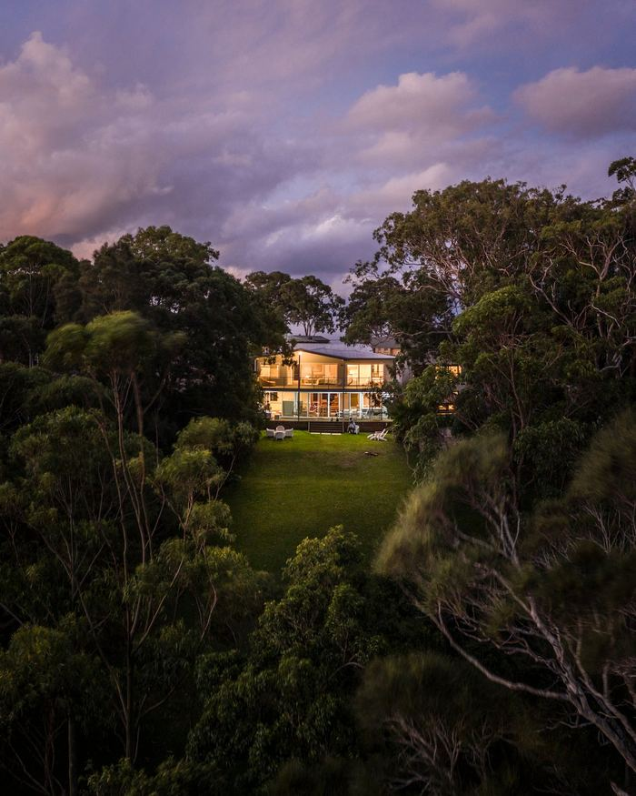
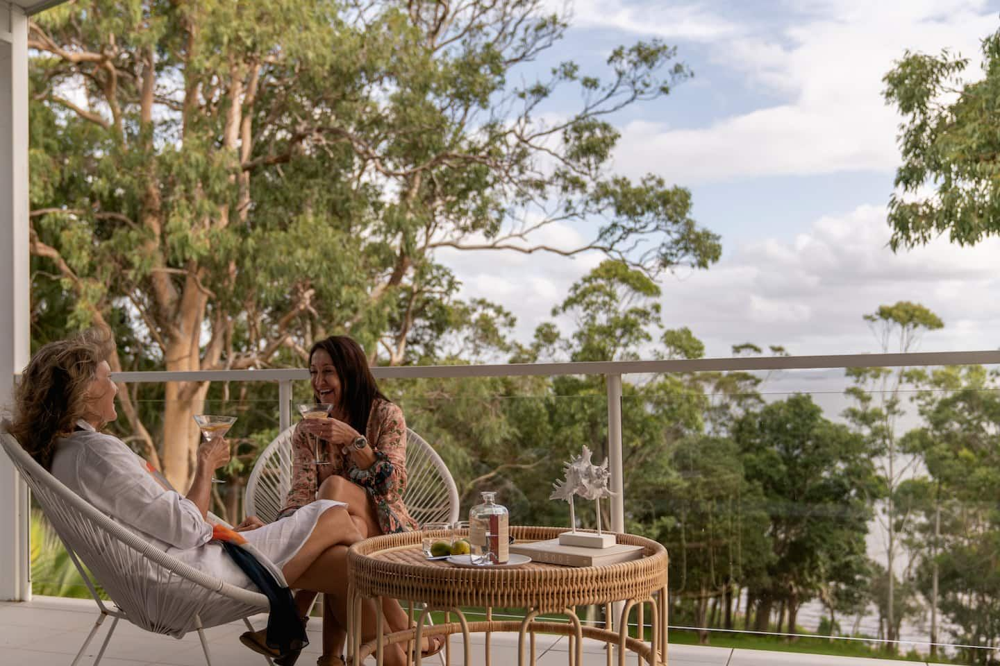
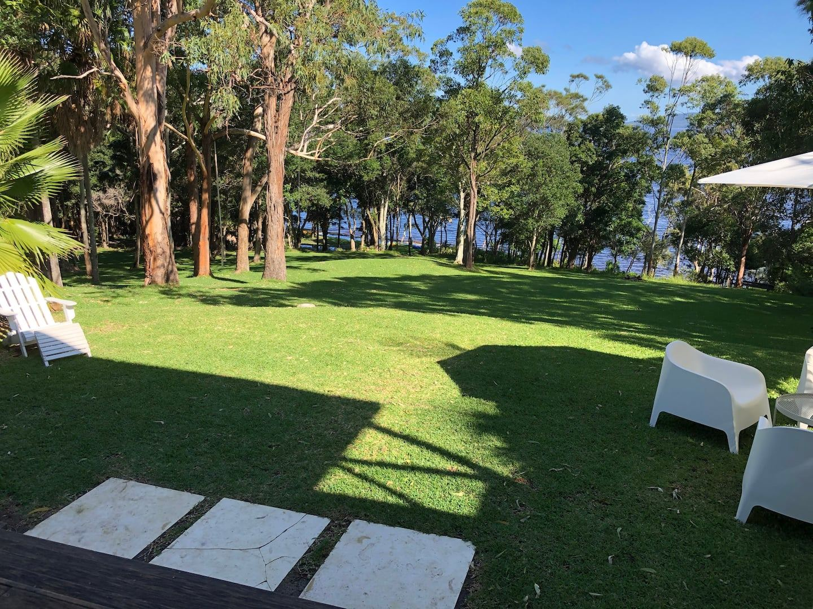
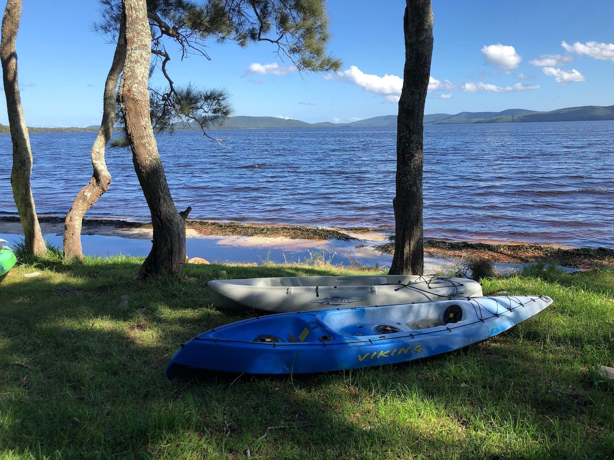
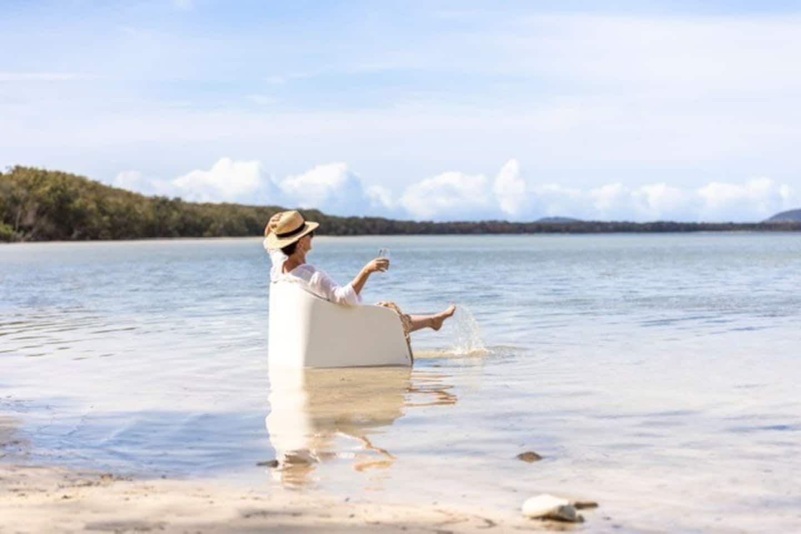
Green Point, a ten-minute drive south of Forster
A whole house on the shore of Wallis Lake.
Six bedrooms for up to 14 guests. The backyard runs down to the water.
From the back deck, cross the lawn.
The deck looks over the lake through the gums. Step off it onto the grass.
Twenty metres later, you're in the lake.
The kayak is yours to use. The water off the backyard is shallow.
The house
Bask sits on the eastern shore of Wallis Lake, on Worimi country. The main bedroom, the studio, the kitchen, the dining room and the main living area all look out over the water.
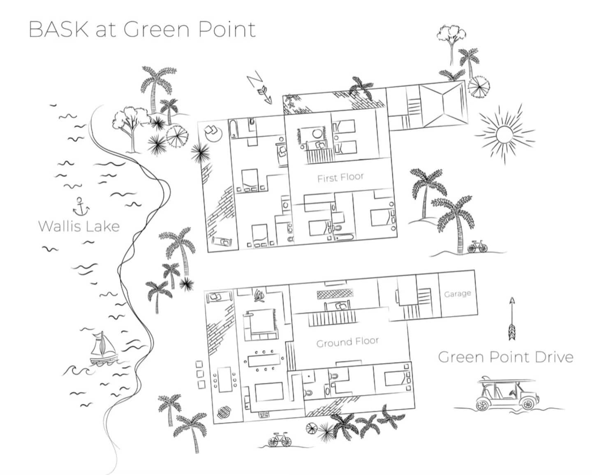
- Sleeps 14
- Six bedrooms and four bathrooms.
- Cook
- A big kitchen with a double fridge, a dishwasher and a servery out to the deck.
- Little ones
- A cot and a highchair.
- Warm
- A wood fire for the cooler months, reverse cycle air conditioning and ceiling fans.
- Spread out
- A second living area downstairs, plus a mud room for bags and shoes and a full laundry.
- Arrive
- Self check-in with a key safe, from 3pm to midnight. Check out before 10am.
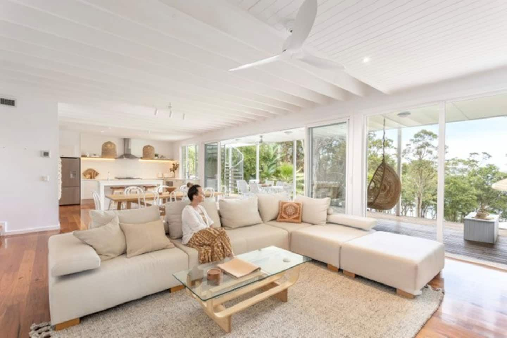
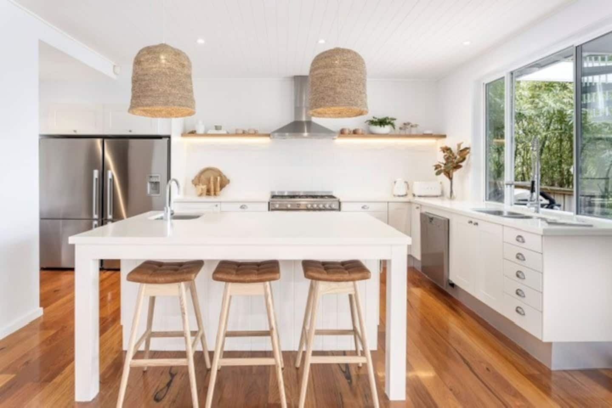
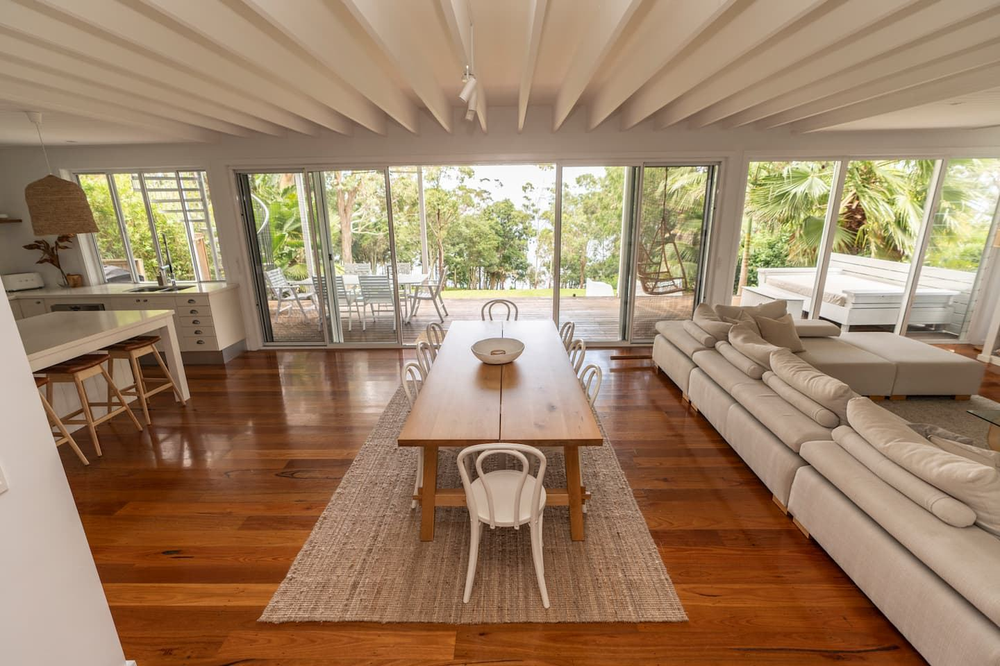
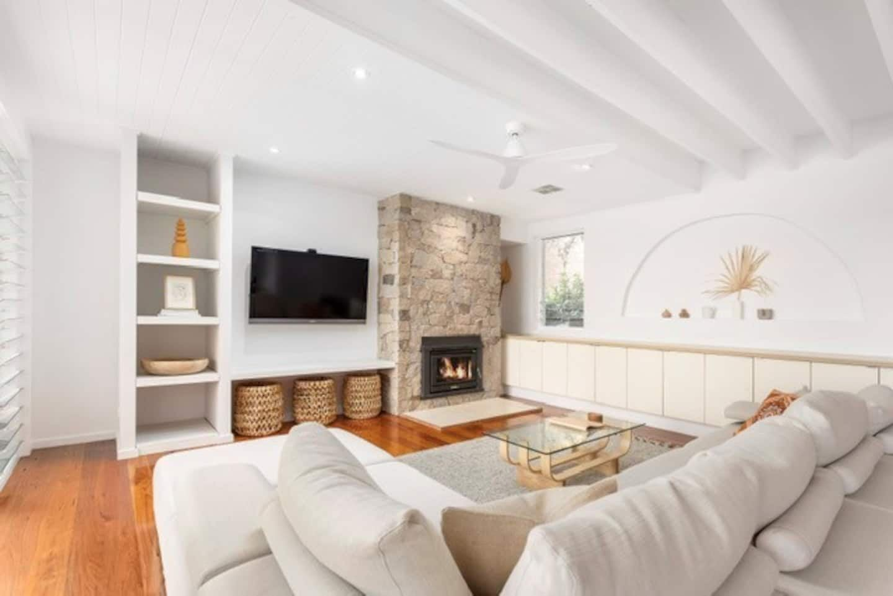
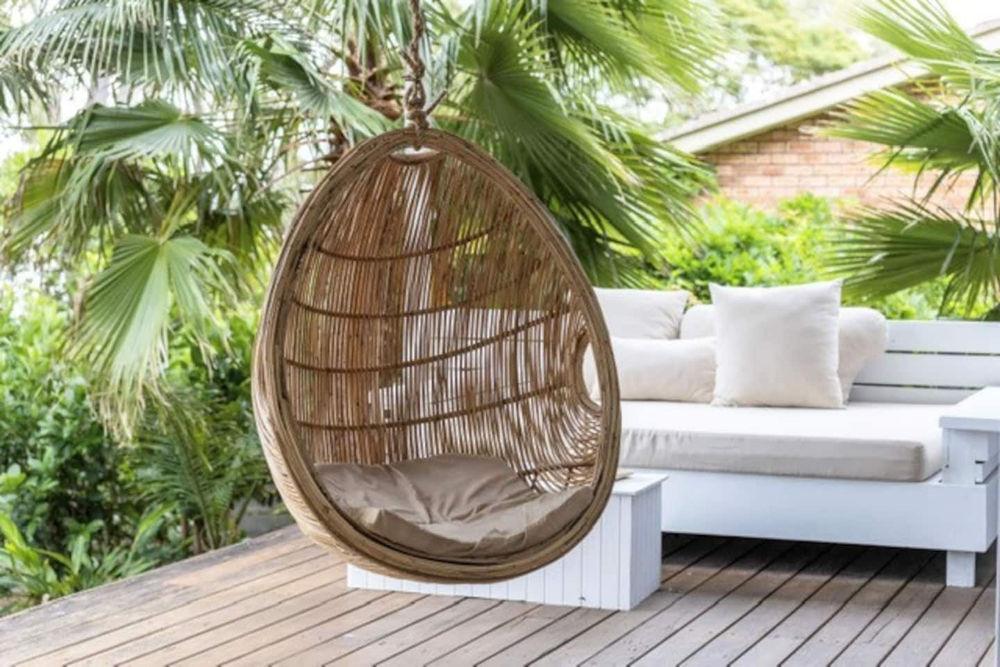
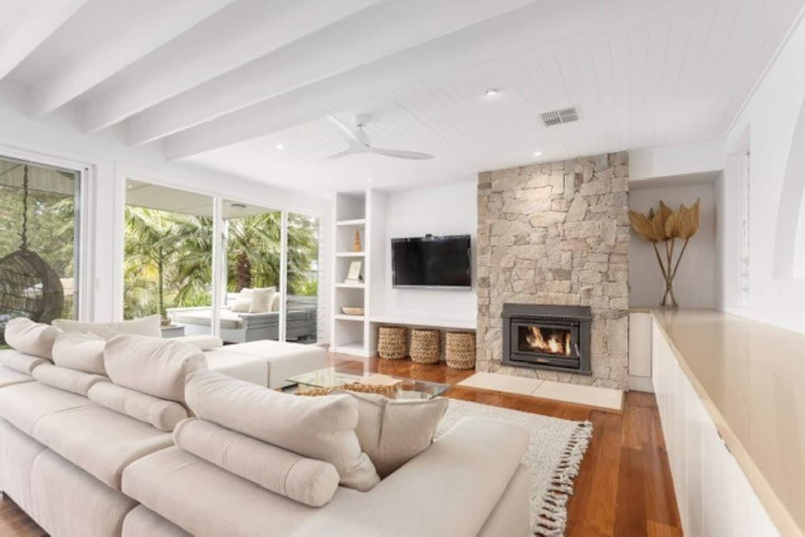
Six bedrooms
Two have their own ensuite: the main suite upstairs, and the studio, which also has a kitchenette and a spiral stair from the deck down to the yard.
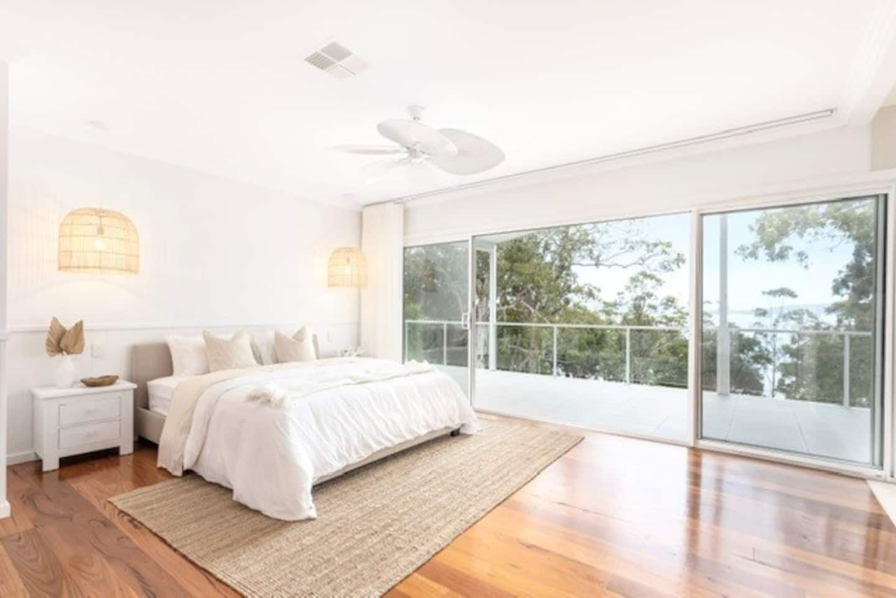
- Bedroom 1King. The main suite, with lake views, a bath, a sitting area and a walk-in robe.
- Bedroom 2King. The studio, with an ensuite and a kitchenette.
- Bedroom 3Queen.
- Bedroom 4Queen.
- Bedroom 5Two double beds.
- Bedroom 6Queen, downstairs.
The lake is the backyard.
There's a kayak to use whenever you like, and guests mention paddle boards too. The water off the yard is shallow, so kids can wade and play.
"We had lovely weather and saw so many birds, including many sea eagles."
Catherine, Airbnb, November 2026
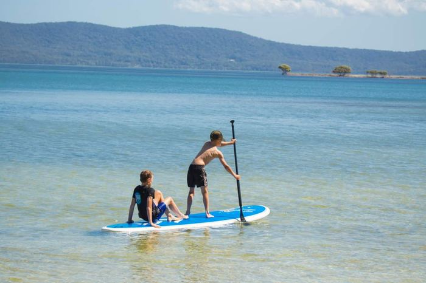
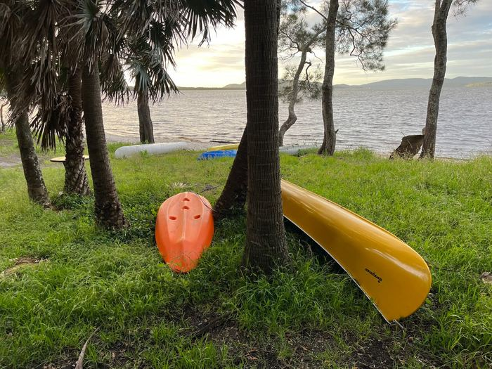
What guests say
4.98from 132 reviews on Airbnb
"Backyard had direct access to the lake. Water is shallow for the kids to play."
Lily, Airbnb, October 2026
"Having two bedrooms with ensuites was brilliant for a big family group!"
Megan, Airbnb, September 2026
"The view when you open the front door is just beautiful!"
Georgy, Airbnb, March 2026
Getting here
Green Point is a quiet lakeside village. The ocean beaches are about ten minutes' drive.
| From Green Point, by road | Distance |
|---|---|
| Forster Main Beach | 13 km |
| Tuncurry | 14 km |
| Newcastle | 145 km |
| Sydney | 292 km |
Road distances on OpenStreetMap, rounded.
Check dates
See open dates on Airbnb, or send us a message on Instagram with your dates and group size.
Good to know
- Guests
- Up to 14, in six bedrooms.
- Arrive
- From 3pm to midnight, self check-in with a key safe.
- Leave
- Before 10am.
- Water
- The lake is at the bottom of the yard.
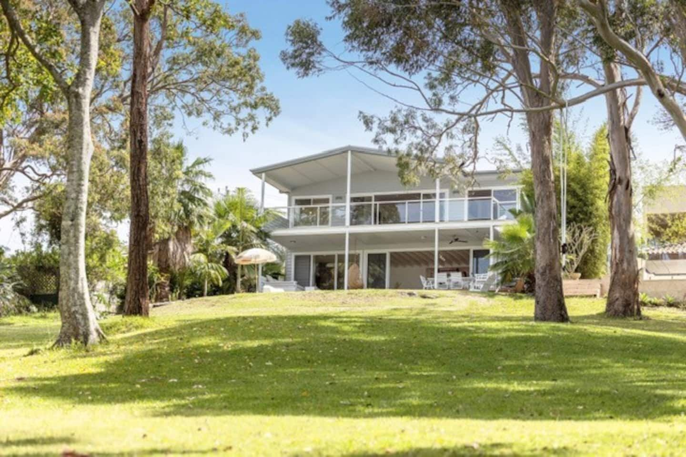
Bask, from the lawn.
97 Green Point Drive, Green Point. Six bedrooms, 14 guests, and Wallis Lake twenty metres away.